We define the notions of left and right fibrations, and show that they admit a notion of covariant/contravariant transport.
Definition 4.2.1 (Left/right fibration). A functor \(f\colon A \to B\) is called a left fibration if the directed evaluation map \(\vec{\ev}^f_0\colon \Fun([1],A) \to A \vectimes{f} B\) is an equivalence. Dually, we say that \(f\) is a right fibration if \(\vec{\ev}^f_1\colon \Fun([1],A) \to B \vectimes{f} A\) is an equivalence.
Lemma 4.2.2. A functor \(f\colon A \to B\) is a left fibration if and only if the commutative square
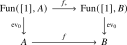
Proof
This is immediate from the fact that the directed evaluation map \(\vec{\ev}^f_0\) is defined as the unique dashed map filling the following diagram:
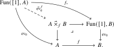
Corollary 4.2.3. Let \(f\colon A \to B\) be a left (resp. right) fibration. Then the commutative square
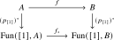
Proof
We prove the claim for left fibrations; the claim for right fibrations is dual. Consider the following commutative diagram:
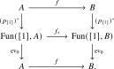
Proposition 4.2.4. Let \(p\colon X \to Y\) be a functor and assume that \(Y\) is a groupoid. Then the following conditions are equivalent:
(1) The category \(X\) is a groupoid;
(2) The map \(p\) is a left fibration;
(3) The map \(p\) is a right fibration.
Proof
We prove the equivalence between (1) and (2); the equivalence between (1) and (3) is dual. Consider the following commutative diagram: Since \(Y\) is a groupoid, the right vertical map is an equivalence. It follows that this square is a pullback square if and only if the left vertical map is an equivalence. But the former is by Lemma 4.2.2 equivalent to (2), while the latter is equivalent to (1).
Corollary 4.2.5. If \(f\colon X \to Y\) is a left (resp. right) fibration and \(Y\) is a groupoid, then also \(X\) is a groupoid.
Corollary 4.2.6. Let \(f\colon A \to B\) be a left (resp. right) fibration. Then every fiber of \(f\) is a groupoid.
Proof
For every term \(b\) of \(B\), the map \(A_b \to \{b\}\) is again a left (resp. right) fibration, hence the claim follows from the previous corollary.
4.2.1 Covariant transport
For a left fibration \(f\colon A \to B\), the fibers \(A_b\) are suitably functorial in the object \(b \in B\): every morphism \(\beta\colon b \to b'\) in \(B\) induces a functor \(\beta_! \colon A_b \to A_{b'}\) between fibers, called the covariant transport functor. Dually, right fibrations admit contravariant transport functors. We will now construct these functors and prove various of their basic properties.
Definition 4.2.7 (Category of lifts). Let \(f\colon A \to B\) be a functor, let \(\Gamma\) be a category, and consider a term
\(\Gamma\vdash(a,\beta):A \vectimes{f} B\), given by a term \(a\) of \(A\) and a morphism
\(\beta\colon f(a) \to b'\) in \(B\). We define the category \(\Lift^f_0(a,\beta)\) of
covariant lifts as the pullback
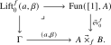
Dually, for a term \(\Gamma\vdash(a',\beta):B \vectimes{f} A\), we define the category \(\Lift^f_1(a',\beta)\) of contravariant lifts by the pullback A term of \(\Lift^f_1(a',\beta)\) is called a contravariant lift of \(\beta\) ending in \(a'\) and consists of a morphism \(\alpha \colon a \to a'\) in \(A\) whose image under \(f\) is identified with \(\beta\), i.e. there is an isomorphism between \(\beta\) and \(f(\alpha)\) as objects of the relative slice \(B_{/f(a')}\).
Corollary 4.2.8. A functor \(f\colon A \to B\) is a left fibration if and only if, for every category \(\Gamma\) and every term \(\Gamma\vdash(a,\beta):A \vectimes{f} B\), the structural functor \(\Lift^f_0(a,\beta)\to\Gamma\) is an equivalence. Dually, \(f\) is a right fibration if and only if \(\Lift^f_1(a',\beta)\to\Gamma\) is an equivalence for every term \(\Gamma\vdash(a',\beta):B \vectimes{f} A\).
Proof
If \(\vec{\ev}^f_0\) is an equivalence, then every pullback of it is an equivalence, so every structural functor \(\Lift^f_0(a,\beta)\to\Gamma\) is an equivalence. Conversely, take \((a,\beta)\) to be the universal term of \(A \vectimes{f} B\). The corresponding pullback is \(\vec{\ev}^f_0\) itself, so the hypothesis says precisely that \(\vec{\ev}^f_0\) is an equivalence. The right-fibration statement is dual.
Remark 4.2.9. Objectwise recognition of left fibrations will be treated later, using functoriality of universals.
In what follows, we will spell out various constructions in the case of left fibrations, and be more terse about the dual constructions for right fibrations.
Construction 4.2.10 (Covariant transport). Let \(f\colon A \to B\) be a left fibration. We denote by \[ \lift^f_0\colon A \vectimes{f} B \to \Fun([1],A) \] the inverse of the functor \(\vec{\ev}^f_0\colon \Fun([1],A) \to A \vectimes{f} B\). For a term \((a,\beta)\) of \(A \vectimes{f} B\), we denote the morphism \(\lift^f_0(a,\beta)\) in \(A\) by \[ \lift^f_0(a,\beta)\colon a \to \beta_!(a), \] and refer to its target \(\beta_!(a)\) as the covariant transport of \(a\) along \(\beta\). Observe that \(\lift^f_0(a,\beta)\) is a covariant lift of \(\beta\) starting in \(a\), and in particular we see that \(\beta_!(a)\) is a term of \(A_{b'}\). Fixing a morphism \(\beta\colon b \to b'\) of \(B\), the assignment \(a \mapsto \beta_!(a)\) thus provides a functor \[ \beta_!\colon A_b \to A_{b'}. \] Dually, if \(f\) is instead a right fibration, we denote the inverse of \(\vec{\ev}^f_1\) by \(\lift^f_1\). Its value at a term \((a',\beta)\) of \(B \vectimes{f} A\) is denoted by \(\lift^f_1(a',\beta)\colon \beta^*(a') \to a'\) and we refer to \(\beta^*(a')\) as the contravariant transport of \(a'\) along \(\beta\). If we again fix a morphism \(\beta\colon b \to b'\) of \(B\), this construction assembles into a functor \(\beta^*\colon A_{b'} \to A_b\).
Remark 4.2.11. We remind the reader that we may construct functors like \(\beta_!\colon A_b \to A_{b'}\) simply by providing for every term of \(A_b\) a term of \(A_{b'}\): a ‘term’ is defined as a functor \(a\colon \Gamma \to A_b\) from an arbitrary category \(\Gamma\), and Construction 4.2.10 provides for us another functor \(\beta_!(a)\colon \Gamma \to A_{b'}\). Applying this to the identity functor \(a = \id_{A_b}\colon A_b \to A_b\) thus provides the desired functor \(\beta_!\colon A_b \to A_{b'}\).
Since this is the first time we use this method for constructing a functor, let us give an alternative definition of \(\beta_!\colon A_b \to A_{b'}\) that does not use the language of terms. As a first step, we observe that the assignment \(a \mapsto (a,\beta)\) extends to a functor \(A_b \to A \vectimes{f} B\), defined as the unique dashed arrow making the following diagram commute:
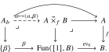
The next proposition shows that the covariant transport functors \(\beta_!\colon A_b \to A_{b'}\) are suitably ‘functorial’:
Proposition 4.2.12. Let \(f\colon A \to B\) be a left fibration.
(1) For \(\beta = \id_b\colon b \to b\), the functor \((\id_b)_!\colon A_b \to A_b\) is identified with the identity functor;
(2) For morphisms \(\beta\colon b \to b'\) and \(\beta'\colon b' \to b''\) in \(B\), the composite functor \[ \beta'_! \circ \beta _!\colon A_b \to A_{b''} \] is identified with \((\beta' \circ \beta)_!\colon A_b \to A_{b''}\).
The dual result for the contravariant transport functors of a right fibration is also valid.
Proof
For (1), observe that for any term \(a : A_b\) the map \(\id_a\colon a \to a\) is a covariant lift of \(\id_b\colon b \to b\) starting in \(a\). By uniqueness of covariant lifts, it follows that \(\id_a = \lift^f_0(a,\id_b)\), and in particular we have \(a = (\id_b)_!a\). Applying this to the universal term of \(A_b\) provides the desired identification \((\id_b)_! = \id_{A_b}\).
For (2), we have for a term \(a : A_b\) a covariant lift \[ \lift^f_0(a,\beta)\colon a \to \beta_!(a) \] of \(\beta\) starting in \(a\), which in turn leads to a covariant lift \[ \lift^f_0(\beta_!(a), \beta') \colon \beta_!(a) \to \beta'_!(\beta_!(a)). \] Since the composite of these two morphisms is a covariant lift of \(\beta' \circ \beta\) starting in \(a\), it follows that there is an isomorphism \[ \lift^f_0(\beta_!(a), \beta') \circ \lift^f_0(a,\beta) = \lift^f_0(a,\beta' \circ \beta), \] and in particular we get \((\beta' \circ \beta)_!(a) = \beta'_!(\beta_!(a))\). Taking \(a\) to be the universal term of \(A_b\) then provides the desired identification.
The covariant transport functors are compatible with maps of left fibrations:
Lemma 4.2.13. Consider a morphism of left fibrations over \(B\):
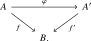
Proof
This is clear from the observation that the morphism \[ \phi(\lift^f_0(a,\beta)) \colon \phi_b(a) \to \phi_{b'}(\beta_!(a)) \] in \(A'\) is a covariant lift of \(\beta\) starting in \(\phi_b(a)\), so that it must be isomorphic to the morphism \(\lift^f_0(\phi_b(a), \beta)\colon \phi_b(a) \to \beta_!(\phi_b(a))\).
4.2.2 Closure properties left/right fibrations
We now prove various preservation properties of left and right fibrations. While the results below are only stated for left fibrations, all of them admit dual versions for right fibrations whose formulations we leave to the reader.
Lemma 4.2.14. Every equivalence \(f\colon A \iso B\) is a left fibration.
Proof
This is immediate from Lemma 4.1.5.
Proposition 4.2.15 (Base change). Consider a pullback square of categories
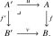
(1) If \(f\) is a left fibration, then also \(f'\) is a left fibration;
(2) For a morphism \(\beta\colon b \to b'\) in \(B'\), the following square commutes:
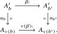
Proof
Part (1) is immediate from Lemma 4.1.6, which says that the map \(\vec{\ev}^{f'}_0\) is a base change of \(\vec{\ev}^f_0\). This implies that the inverse map \(\lift^{f'}_0\) is a base change of \(\lift^f_0\): given a morphism \(\beta\colon b \to b'\) in \(B'\) and a term \(a\) of \(A'_{b}\), the covariant lift \(\lift^{f'}_0(a,\beta)\colon a \to \beta_!(a)\) of \(\beta\) starting in \(a\) is sent under \(u\) to the covariant lift \(\lift^{f}_0(u(a),v(\beta))\colon u(a) \to v(\beta)_!(u(a))\) of \(v(\beta)\colon v(b) \to v(b')\) starting in \(u(a)\). This proves part (2).
Proposition 4.2.16 (Composition). Consider a commutative diagram
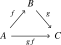
Proof
By Lemma 4.1.7, there is a commutative triangle
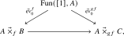
Lemma 4.2.17. The class of left fibrations is stable under retracts.
Proof
This is immediate from Lemma 4.1.8.
Lemma 4.2.18. Let \(f\colon C \to D\) be a left fibration. Then for every category \(E\) also the induced functor \(f_*\colon \Fun(E,C) \to \Fun(E,D)\) is a left fibration.
Proof
Observe that the directed evaluation map for \(f_*\) is obtained by applying \(\Fun(E,-)\) to the directed evaluation map of \(f\), and hence is again an equivalence.